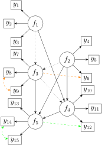
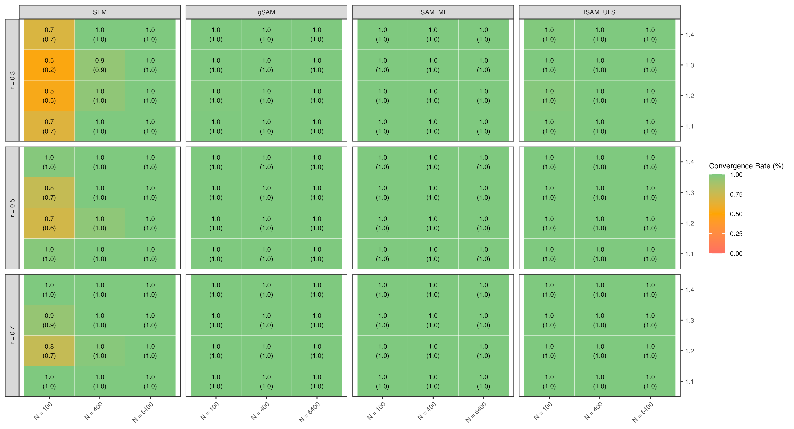
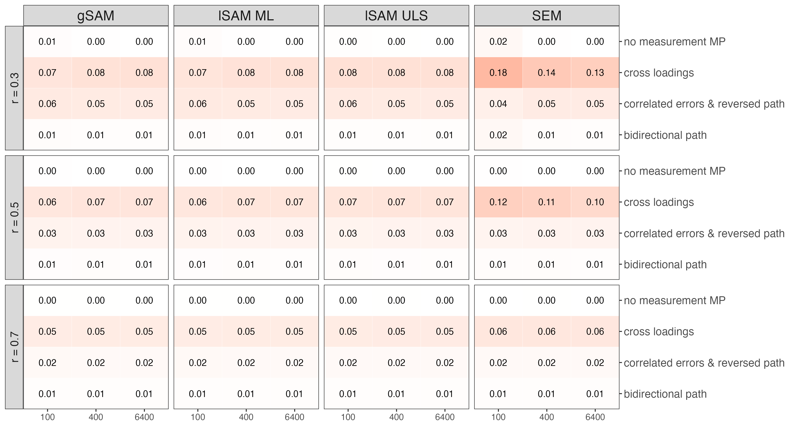
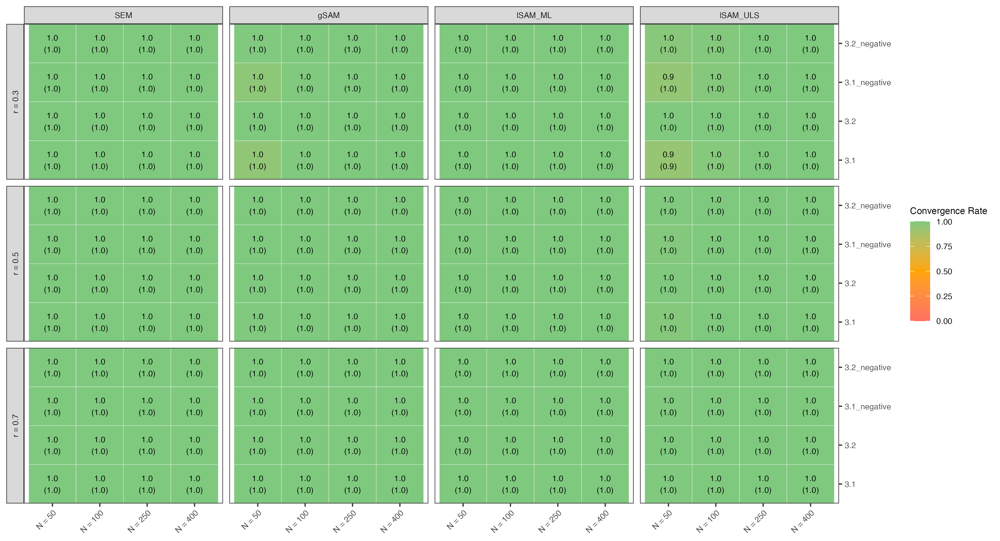
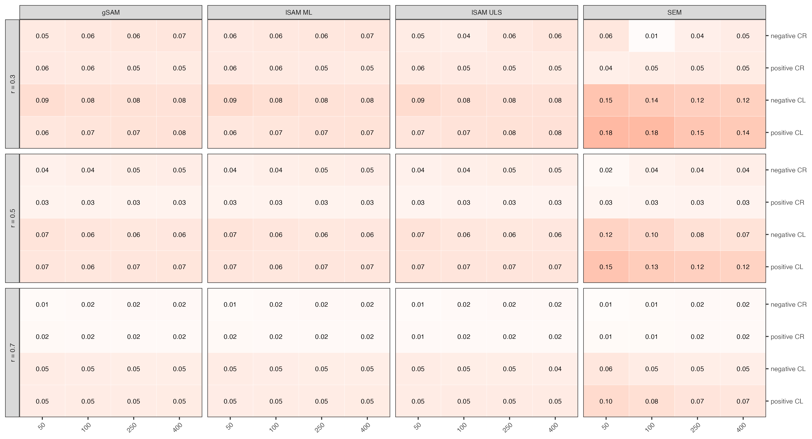

Adversarial Simulation
Structural after Measurement vs. vanilla SEM estimation - a Case Study on Adversarial Collaboration for Simulation Studies
Valentin Kriegmair
Outline
- The Generalizability Challenge
- Adversarial Collaboration as Remedy
- An Adversarial Simulation Framework
Time for questions
- Background: SAM vs. SEM
- Findings: Results and Collaboration
- Outlook: Evaluation and Future Directions
Discussion
1. The Generalizability Challenge
The Generalizability Challenge
general & verbal
researcher’s degrees of freedom
→ ambiguity
→ persistent disagreement
specific & empirical
The Generalizability Challenge
In Simulation Studies
general & verbal
researchers degrees of freedom
→ ambiguity
→ persistant disagreement
specific & empirical
Adversarial Collaboration (AC) as a Remedy?
Adversarial Collaboration (AC)
Identify general & verbal Disagreement
Agree on:
- Operationalizations
- Test Design
- Interpretation
→ Reduce ambiguity
→ Increase generalizability
unify
Creating an Adversarial Simulation Framework
Structure of a Simulation Study
| Steps of a Simulation Study | Content |
|---|---|
| 1. Research Question | Verbal description of Research Goals |
| 2. Population Model | Type, size, complexity |
| 3. Data Generation | E.g. resampling vs. parametric draw |
| 4. Experimental Design | Specifiy conditions (e.g., sample size) |
| 5. Method Selection | Type, implementation, number |
| 6. Estimands | Population level parameter values |
| 7. Performance Metrics | E.g. Bias, Coverage etc. |
| 8. Software | Applies to steps 2-7 |
| 9. Analysis | Decision criteria, graphical display etc. |
Siepe et al. (2023), Paxton et al. (2001), Morris, White, and Crowther (2019)
A Structured Adversarial Simulation Framework
| Round 1 | Round 2 | Round 1 | |
|---|---|---|---|
| Steps | Collaborator 1 | Joint Study | Collaborator 2 |
| 1. Research Question | Agreed upon prior to Round 1 | ||
| 2. Population Model | → | ← | |
| 3. Data Generation | → | ← | |
| 4. Experimental Design | → | ← | |
| 5. Method Selection | → | ← | |
| 6. Estimands | → | ← | |
| 7. Performance Metrics | → | ← | |
| 8. Software | → | ← | |
| 9. Analysis | → | ← |
SAM vs SEM Background
Standard SEM Estimation (e.g.ML, ADF, GLS, ULS)
- e.g. normal theory-based maximum likelihood (ML) discrepancy function
- System-wide parameter (\(\vartheta\)) optimization
- Assumes multivariate normal distribution
Problems:
- non-convergence issues
- improper solutions
- bias due to local measurement misspecifications propagating to all model parameters
- requiring large sample sizes for optimal statistical properties.
Structural After Measurement (SAM)

Two-phase process:
- \(\vartheta_1\): Measurement model
Local SAM (lSAM):
Separate “measurement blocks”
Latent summary statistics and mapping matrix;
Global SAM (gSAM): Fixed measurement parameters for the entire measurement model.
→
- \(\vartheta_2\): Structural model
Rosseel and Loh (2022)
SAM vs. SEM:
Disagreeing Reports
| Rosseel and Loh (2022), Dhaene and Rosseel (2023) | Robitzsch (2022) |
|---|---|
| - SAM outperformed SEM in terms of convergence, bias & RMSE in small samples x low item reliability, especially under misspecifications |
- SAM did not generally outperform traditional SEM in challenging conditions. - SAM appears better: general negative small sample bias of SAM cancels out positive bias from positive misspecifications. |
→ Basis for a case study on adversarial collaboration
SAM vs. SEM:
an Adversarial Simulation
| Rosseel and Loh (2022), Dhaene and Rosseel (2023) | Robitzsch (2022) |
|---|---|
| - SAM outperformed SEM in terms of convergence, bias & RMSE in small samples x low item reliability, especially under misspecifications |
- SAM did not generally outperform traditional SEM in challenging conditions. - SAM appears better: general negative small sample bias of SAM cancels out positive bias from positive misspecifications. |
| Replication by Kriegmair | Replication by Kosanke |
→ Basis for a case study on adversarial collaboration
Research Questions agreed upon prior to individual studies
- How do SAM and traditional SEM methods (including ML and ULS) compare in terms of bias, Mean Squared Error (MSE), and convergence rates in small to moderate samples?
- What is the impact of model misspecifications, such as residual correlations and cross-loadings, on the performance of SAM compared to traditional SEM methods?
Findings of the Case Study
Replication Results
Adversarial Collaboration
Round 1: Individual Studies
| Kriegmair | Kosanke |
|---|---|
| based on Rosseel and Loh (2022) and Dhaene and Rosseel (2023) | based on Robitzsch (2022) |
Studies by Kriegmair
Study 1 based on Rosseel and Loh (2022)
1.1 no misspecifications 
1.2 cross loadings 
1.3 correlated residuals
1.4 structural misspecification
Other Conditions:
- N: 100, 400, 6400
- Indicator reliability: 0.3, 0.5, 0.7
Methods:
- Vanilla SEM with Maximum Likelihood (ML)
- Global SAM (gSAM)
- Local SAM (lSAM-ML)
- Local SAM with unweighted least squares (lSAM-ULS)
Performance Metrics:
- Bias of path estimates
- RMSE of path estimates
- Coverage of 95% CI for path estimates
Study 2 based on Dhaene and Rosseel (2023)
2.1:
- No measurement misspecifications
- Estimated paths absent in population
2.2:
- Estimated paths absent in population
- In exogenous analysis model
- In endogenous analysis model 
Other Conditions:
- N: 100, 400, 6400
- Indicator reliability: 0.3, 0.5, 0.7
- \(R^2\): 0.1, 0.4
- Measurement blocks: 3, 5
Methods:
- Vanilla SEM
- Global SAM
- Local SAM
- Local SAM with unweighted least squares
Studies by Kosanke based on Robitzsch (2022)

Results of individual studies (examplatory)
Convergence Rate
| Kriegmair | Kosanke | |
|---|---|---|
| Verbal Dispute | low convergence rate of SEM | no convergence issues |
| Method selection | un-bounded ML SEM | bounded ML SEM |
| Analysis | condition-wise rates | global rate |
direct:lavInspect(fit, "converged") |
indirect:quietly(safely(simulation_study_)) |
Convergence Rate E.g.: Kriegmair Study 1:
Bias
| Kriegmair | Kosanke | |
|---|---|---|
| Verbal Dispute | “SEM performes worse than SAM in low reliability x low sample size x misspecification” | “SAM generally did not outperform traditional SEM in small to moderate samples.” “[under] unmodelled negative cross-loadings and residual correlations, SAM tended to perform worse than traditional SEM” |
Bias E.g.: Kriegmair Study 1: absolute \(\hat{\beta}\) bias values aggregated across parameters

Bias E.g.: Kosanke Study 1:
Sample Size
|
|||||||
|---|---|---|---|---|---|---|---|
| Method | 50 | 100 | 250 | 500 | 1000 | 2500 | 100000 |
| SEM ML | -0.205 | -0.175 | -0.166 | -0.168 | -0.161 | -0.166 | -0.164 |
| SEM ULS | -0.139 | -0.145 | -0.159 | -0.167 | -0.163 | -0.170 | -0.169 |
| LSAM ML | -0.498 | -0.385 | -0.272 | -0.225 | -0.196 | -0.189 | -0.180 |
| LSAM ULS | -0.497 | -0.385 | -0.272 | -0.225 | -0.196 | -0.189 | -0.180 |
| GSAM ML | -0.497 | -0.385 | -0.272 | -0.225 | -0.196 | -0.189 | -0.180 |
| GSAM ULS | -0.496 | -0.385 | -0.272 | -0.225 | -0.196 | -0.189 | -0.180 |
Relative bias of \(\hat{\phi}\) in conditions with two negative unmodelled residual correlations in a 2-factor-CFA
Bias
| Kriegmair | Kosanke | |
|---|---|---|
| Verbal Dispute | “SEM performs worse than SAM in low reliability x low sample size x misspecification” | “SAM generally did not outperform traditional SEM in small to moderate samples.” “[under] unmodeled negative cross-loadings and residual correlations, SAM tended to perform worse than traditional SEM” |
| 4. Experimental Design | N:100-6400 Reliability via Θ Positive cross loadings & correlated residuals |
N:50-100000 Reliability via \(\lambda\) Positive & negative cross loadings and correlated residuals (only in CFA) |
Bias
| Kriegmair | Kosanke | |
|---|---|---|
| Verbal Dispute | “SEM performs worse than SAM in low reliability x low sample size x misspecification” | “SAM generally did not outperform traditional SEM in small to moderate samples.” “[under] unmodeled negative cross-loadings and residual correlations, SAM tended to perform worse than traditional SEM” |
| 4. Experimental Design | N:100, 400, 6400 Reliability via \(\Theta\) Positive cross loadings & correlated residuals |
N:50, 100, 250, 500, 1000, 2500, 100000 Reliability via \(\Lambda\) Positive & negative cross loadings & correlated residuals (only in CFA) |
| 5. Population Model | 5-factor-SEM | 2-factor CFA & 5-factor SEM |
| 6. Analysis | Aggregated absolute values and parameter-wise | Aggregated absolute values & aggregated relative bias |
Collaboration
| Round 1 | Round 2 | Round 1 | |
|---|---|---|---|
| Steps | Kriegmair | Joint Study | Kosanke |
| Population Model | 5-factor-SEM | 5-factor-SEM |
5-factor-SEM 2-factor-CFA |
| Data Generation | parametric & normally distributed | parametric & normally distributed | parametric & normally distributed |
| Experimental Design |
Misspecifications (+) N: 100 - 6400 Reliability via Θ |
Misspecifications (+/-) N: 50, 100, 250, 400 Reliability via Θ |
Misspecifications (+/-) N: 50 - 100,000 Reliability via λ |
| Method Selection | SEM-ML, gSAM, lSAM (ULS & ML) | bounded SEM-ML, gSAM, lSAM (ULS & ML) | bounded SEM (ULS & ML), gSAM, lSAM (ULS & ML) |
| Estimands | β: Fixed at 0.1 and varied | β: Fixed at 0.1 |
β: Fixed at 0.1 φ: Fixed and varied |
| Performance Metrics |
Absolute bias in absolute values RMSE 95% CI coverage Convergence & Improper Solutions |
Absolute bias RMSE 95% CI coverage Convergence & Improper Solutions |
Absolute bias in absolute values Relative bias RMSE 95% CI coverage |
| Software | lavaan::simulateData() | lavaan::simulateData() | lavaan::simulateData() |
| Analysis |
Aggregated across parameters, heat maps |
Aggregated, parameter-wise, decision criteria heat maps |
Aggregated across parameters, decision criteria |
Convergence Rate after collaboration (with bounded-ML SEM)
Bias - parameter-wise after collaboration

Bias - aggregated after collaboration
Updating Verbal Claims:
SAM has no convergence rate advantage over bounded ML SEM
SAM outperforms SEM despite of negative bias under positive and negative cross loadings in small samples and small to moderate reliability
Evaluating the Adversarial Collaboration
Diverging operationalizations:
- Method
- Design
- Reliability etc.
→ Reduced ambiguity
→ Increased generalizability?
unified
Limitations and Future Directions
- “Toy” case study for AC
low stakes & no “real” adversaries
partly resolvable by thorough review
- Increased Generalizability?
still limited to specific (somewhat less) arbitrary choices for simulation
→ empirically ground simulations by sampling models (and data) from the literature (Taxonomy.jl)
Discussion
- Is the settling of verbal disputes through unified operationalizations really increasing generalizability?
- Are individual studies in prior to adversarial collaboration beneficial?
- How could an incentive structure be designed to encourage adversarial collaboration?
- Could adversarial collaboration be implemented in the peer review process?
References
Clark, Cory, and Philip Tetlock. 2021. “Adversarial Collaboration: The Next Science Reform.” In. https://doi.org/10.1007/978-3-031-29148-7_32.
Dhaene, Sara, and Yves Rosseel. 2023. “An Evaluation of Non-Iterative Estimators in the Structural After Measurement (SAM) Approach to Structural Equation Modeling (SEM).” Structural Equation Modeling: A Multidisciplinary Journal 30 (6): 926–40. https://doi.org/10.1080/10705511.2023.2220135.
Mellers, Barbara, Ralph Hertwig, and Daniel Kahneman. 2001. “Do Frequency Representations Eliminate Conjunction Effects? An Exercise in Adversarial Collaboration.” Psychological Science 12 (4): 269–75. https://doi.org/10.1111/1467-9280.00350.
Melloni, Lucia, Liad Mudrik, Michael Pitts, Katarina Bendtz, Oscar Ferrante, Urszula Gorska, Rony Hirschhorn, et al. 2023. “An Adversarial Collaboration Protocol for Testing Contrasting Predictions of Global Neuronal Workspace and Integrated Information Theory.” PloS One 18 (2): e0268577. https://doi.org/10.1371/journal.pone.0268577.
Morris, Tim P., Ian R. White, and Michael J. Crowther. 2019. “Using Simulation Studies to Evaluate Statistical Methods.” Statistics in Medicine 38 (11): 2074–2102. https://doi.org/10.1002/sim.8086.
Paxton, Pamela, Patrick J. Curran, Kenneth A. Bollen, Jim Kirby, and Feinian Chen. 2001. “Monte Carlo Experiments: Design and Implementation.” Structural Equation Modeling: A Multidisciplinary Journal 8 (2): 287–312. https://doi.org/10.1207/S15328007SEM0802_7.
Robitzsch, Alexander. 2022. “Comparing the Robustness of the Structural After Measurement (SAM) Approach to Structural Equation Modeling (SEM) Against Local Model Misspecifications with Alternative Estimation Approaches.” Stats 5 (3): 631–72. https://doi.org/10.3390/stats5030039.
Rosseel, Yves, and Wen Wei Loh. 2022. “A Structural After Measurement Approach to Structural Equation Modeling.” Psychological Methods, No Pagination Specified–. https://doi.org/10.1037/met0000503.
Siepe, Björn S., František Bartoš, Tim P Morris, Anne-Laure Boulesteix, Daniel W. Heck, and Samuel Pawel. 2023. “Simulation Studies for Methodological Research in Psychology: A Standardized Template for Planning, Preregistration, and Reporting.” Preprint. PsyArXiv. https://doi.org/10.31234/osf.io/ufgy6.